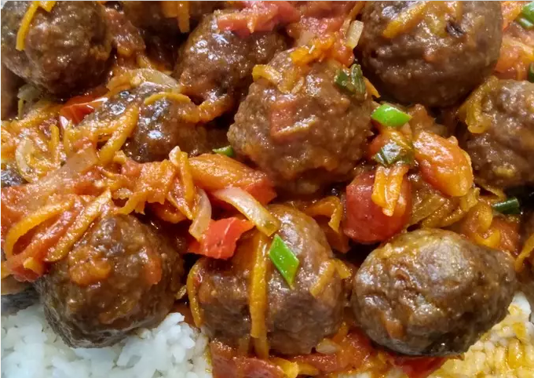

Meatballs in sauce with rice

Description
Delicious rice with sauce and meatballs, simple and easy to make but it will always be tasty.
Ingredients
Meatballs
- 1 kg of ground beef
- 1 quarter red bell pepper
- 1 strip of green onion
- 2 tablespoons spicy grated cheese
- 1 small onion
- 1/2 bread Mignon and 25 cc of milk
- Salt, oregano, ground pepper and ground chili
- Flour for batter
Sauce
- 1 small grated carrot
- 1 small red bell pepper cut into julienne strips
- 1 onion cut in julienne
- 1 can diced tomatoes
- 1/2 cup dry white wine
- Salt, ground pepper, oregano and a pinch of ground chili
- 3 cloves minced garlic
- Water
Rice
- 2 and a half glasses of water
- 1 rice glass of the same size that we use for water
- Salt to taste
Directions
- Step 1: First we make the meatballs. I made them in the food processor, I put the bread soaked in milk, the vegetables and I processed them. Then I added the cheese, seasonings, and ground beef. Everything was mixed, I made balls the size of a tablespoon of soup, passed them through flour and cooked them fried. Reserve.
- Step 2: Then I prepared the sauce in a large-mouth frying pan and sautéed the carrots, onion and bell pepper.
- Step 3: When everything was very tender, I added the white wine. And then the diced tomato.
- Step 4: I let it cook for half an hour and then I added the meatballs that are integrated with the sauce. If they see that the liquid is consumed during cooking, they add hot water.
- Step 5: Finally, as I made them with white rice in another pot, I boiled two and a half glasses of water with salt to taste. When it boiled, I added the rice, it was cooked for 15 minutes
- Step 6: Then I turn it off and let it rest, it is not necessary to strain it and the grains detach well from each other.
- Step 7: In a bowl I put the rice and on top the meatballs in sauce. Enjoy.